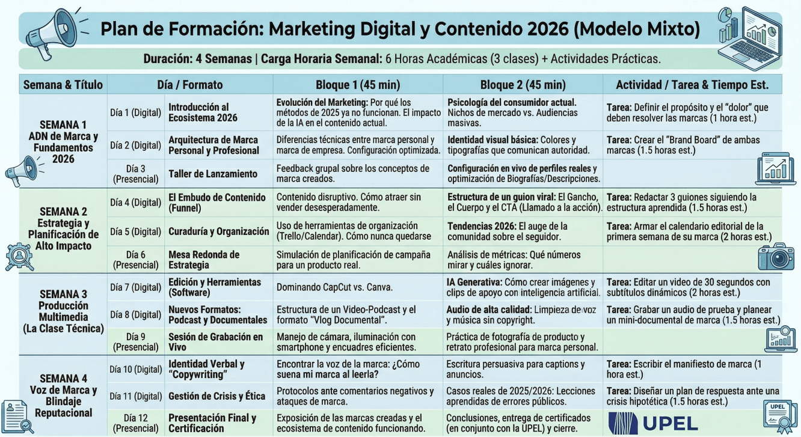

En el entorno digital actual, la actualización constante con herramientas funcionales es imperativa. La capacidad de operar como un especialista estratégico, capaz de tomar decisiones basadas en datos y ejecutarlas con precisión, se ha convertido en la habilidad definitiva para liderar en las redes sociales.
El curso se impartirá a través de una plataforma LMS (E-learning) propia, donde cada estudiante contará con un perfil personalizado. En este ecosistema digital, tendrán acceso centralizado a las lecciones, recursos descargables y la gestión de sus actividades académicas.
El plan de evaluación ha sido diseñado bajo un enfoque de enseñanza por competencias. Las pruebas son evolutivas, lo que permite medir el progreso real del estudiante y asegurar que los conceptos teóricos se transformen en habilidades prácticas aplicables.
A través de la plataforma educativa, se realizará un seguimiento diario del progreso. El docente supervisará el cumplimiento de los hitos de aprendizaje, brindando retroalimentación personalizada sobre las asignaciones y resolviendo dudas de manera oportuna.

Día 1 (Digital): Introducción al Ecosistema 2026
1. Bloque 1: Evolución del Marketing: Por qué los métodos del 2025 ya no funcionan. El impacto de la IA en el contenido actual.
2. Bloque 2: Psicología del consumidor actual. Nichos de mercado vs. Audiencias masivas.
3. Tarea: Definir el propósito y el "dolor" que deben resolver las marcas (1 hora est.).
Día 2 (Digital): Arquitectura de Marca Personal y Profesional
1. Bloque 1: Diferencias técnicas entre marca personal y marca de empresa. Configuración optimizada.
2. Bloque 2: Identidad visual básica: Colores y tipografías que comunican autoridad.
3. Tarea: Crear el "Brand Board" de ambas marcas (1.5 horas est.).
Día 3 (Presencial): Taller de Lanzamiento
1. Bloque 1: Feedback grupal sobre los conceptos de marca creados.
2. Bloque 2: Configuración en vivo de perfiles reales y optimización de Biografías/Descripciones.
Día 4 (Digital): El Embudo de Contenido (Funnel)
1. Bloque 1: Contenido disruptivo. Cómo atraer sin vender desesperadamente.
2. Bloque 2: Estructura de un guion viral: El Gancho, el Cuerpo y el CTA (Llamado a la acción).
3. Tarea: Redactar 3 guiones siguiendo la estructura aprendida (1.5 horas est.).
Día 5 (Digital): Curaduría y Organización
1. Bloque 1: Uso de herramientas de organización (Trello/Calendar). Cómo nunca quedarse sin ideas.
2. Bloque 2: Tendencias 2026: El auge de la comunidad sobre el seguidor.
3. Tarea: Armar el calendario editorial de la primera semana de su marca (2 horas est.).
Día 6 (Presencial): Mesa Redonda de Estrategia
1. Bloque 1: Simulación de planificación de campaña para un producto real.
2. Bloque 2: Análisis de métricas: Qué números mirar y cuáles ignorar.
Día 7 (Digital): Edición y Herramientas (Software)
1. Bloque 1: Dominando CapCut vs. Canva.
2. Bloque 2: IA Generativa: Cómo crear imágenes y clips de apoyo con inteligencia artificial.
3. Tarea: Editar un video de 30 segundos con subtítulos dinámicos (2 horas est.).
Día 8 (Digital): Nuevos Formatos: Podcast y Documentales
1. Bloque 1: Estructura de un Video-Podcast y el formato "Vlog Documental".
2. Bloque 2: Audio de alta calidad: Limpieza de voz y música sin copyright.
3. Tarea: Grabar un audio de prueba y planear un mini-documental de marca (1.5 horas est.).
Día 9 (Presencial): Sesión de Grabación en Vivo
1. Bloque 1: Manejo de cámara, iluminación con smartphone y encuadres eficientes.
2. Bloque 2: Práctica de fotografía de producto y retrato profesional para marca personal.
Día 10 (Digital): Identidad Verbal y "Copywriting"
1. Bloque 1: Encontrar la voz de la marca: ¿Cómo suena mi marca al leerla?
2. Bloque 2: Escritura persuasiva para captions y anuncios.
3. Tarea: Escribir el manifiesto de marca (1 hora est.).
Día 11 (Digital): Gestión de Crisis y Ética
1. Bloque 1: Protocolos ante comentarios negativos y ataques de marca.
2. Bloque 2: Casos reales de 2025/2026: Lecciones aprendidas de errores públicos.
3. Tarea: Diseñar un plan de respuesta ante una crisis hipotética (1.5 horas est.).
Día 12 (Presencial): Presentación Final y Certificación
1. Bloque 1: Exposición de las marcas creadas y el ecosistema de contenido funcionando.
2. Bloque 2: Conclusiones, entrega de certificados (en conjunto con la UPEL) y cierre.
| Actividad | Horas Académicas (45 min) |
|---|---|
| Clases Digitales (8) | 16 horas |
| Clases Presenciales (4) | 8 horas |
| Total Presencial/Sincrónico | 24 horas |
| Actividades Independientes | 15 horas aprox. |
| TOTAL DEL CURSO | 39 horas académicas |
En 2026, el marketing digital ha trascendido la simple publicación de contenido. En un mercado saturado y regido por algoritmos sofisticados, solo las marcas con intención y estrategia logran captar la atención. Este curso capacita al estudiante para dejar de ser un espectador y convertirse en un creador y ejecutor de estrategias funcionales y contenido de alto rendimiento.
0412-196-9701
maximilianofigueroa99@gmail.com